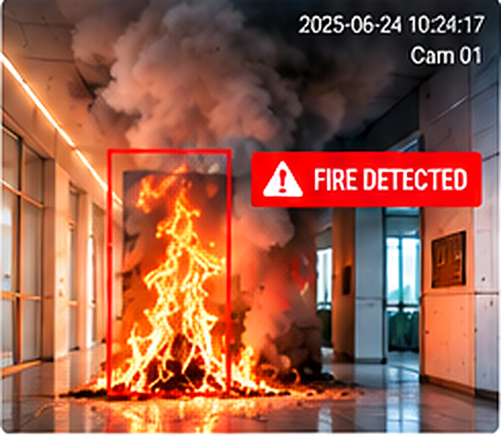
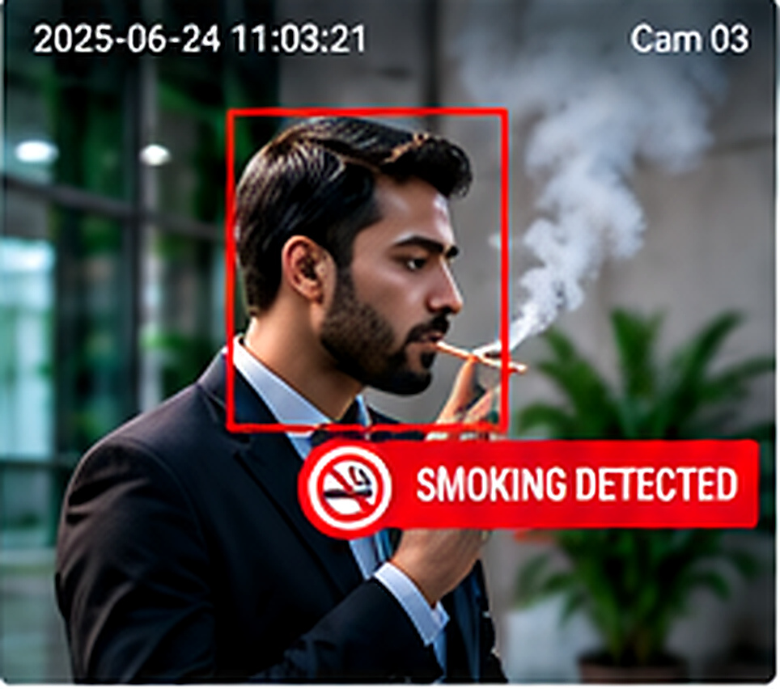
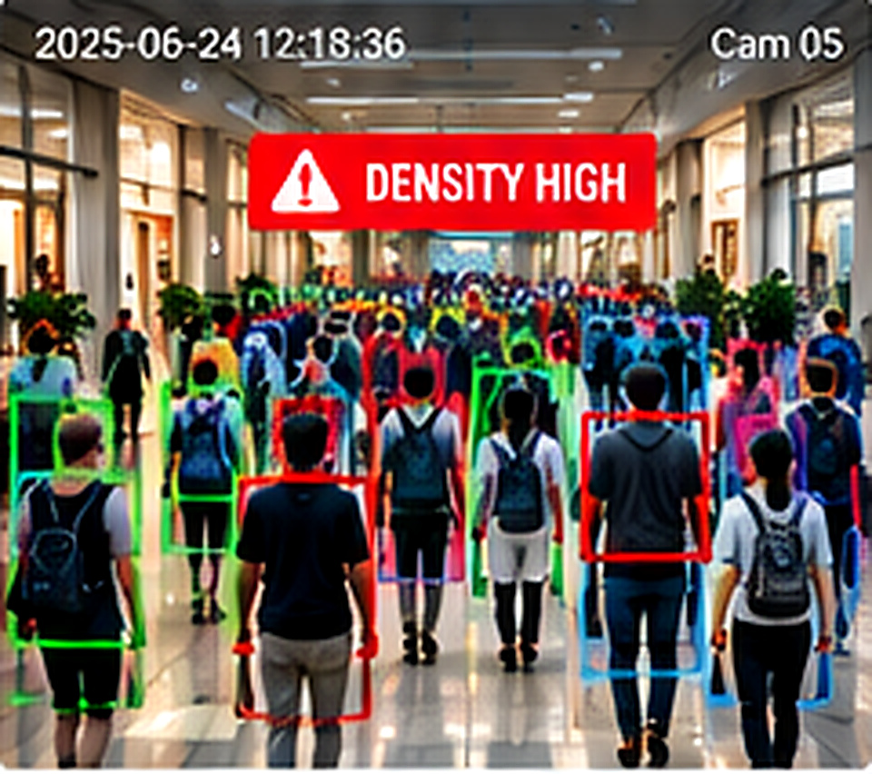
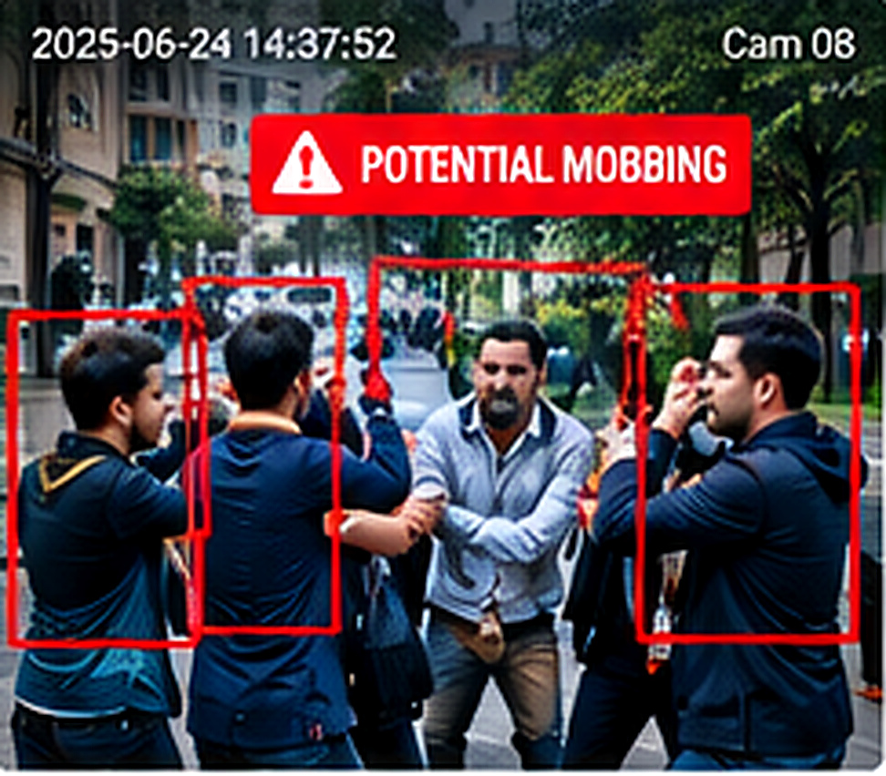
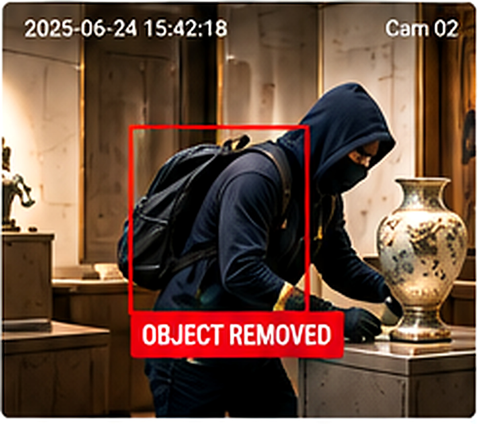
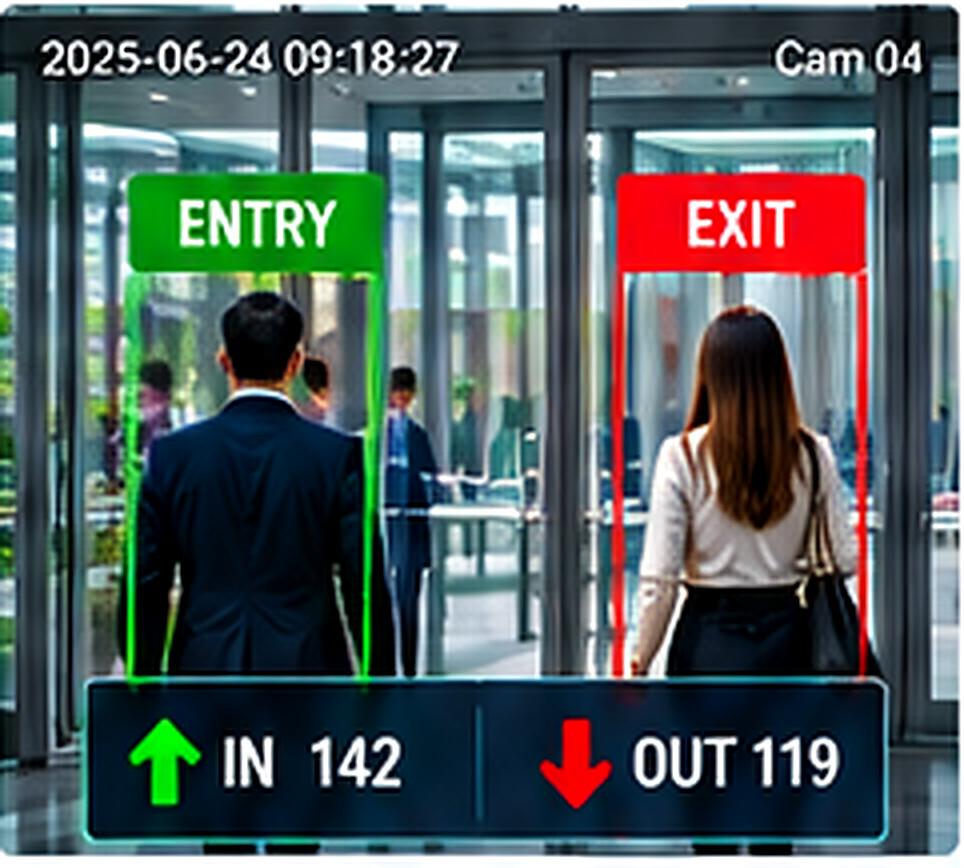
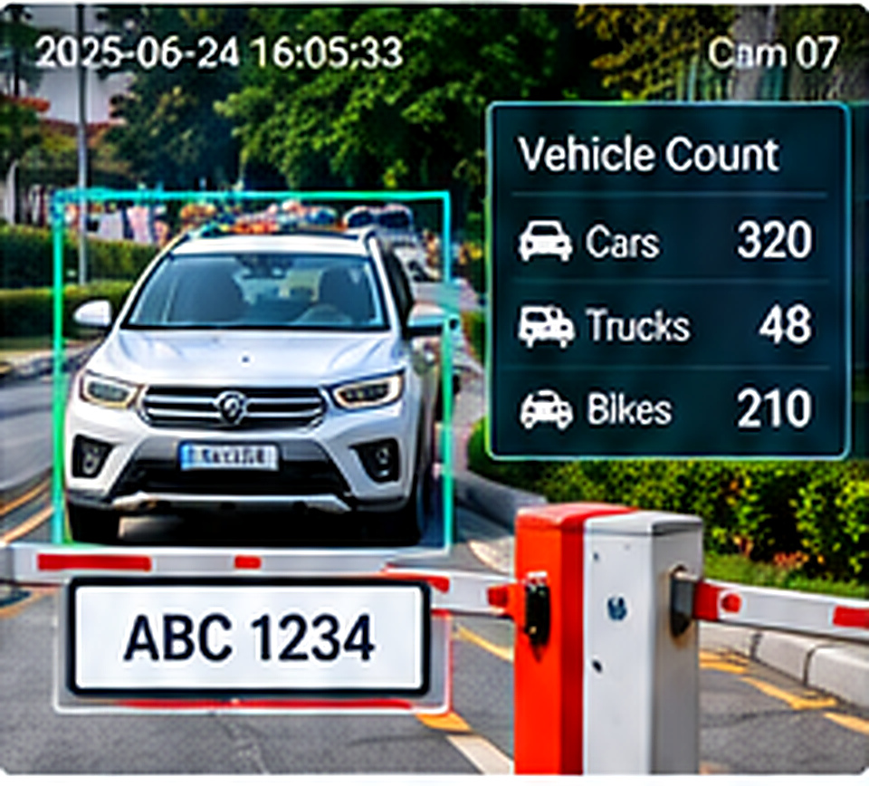
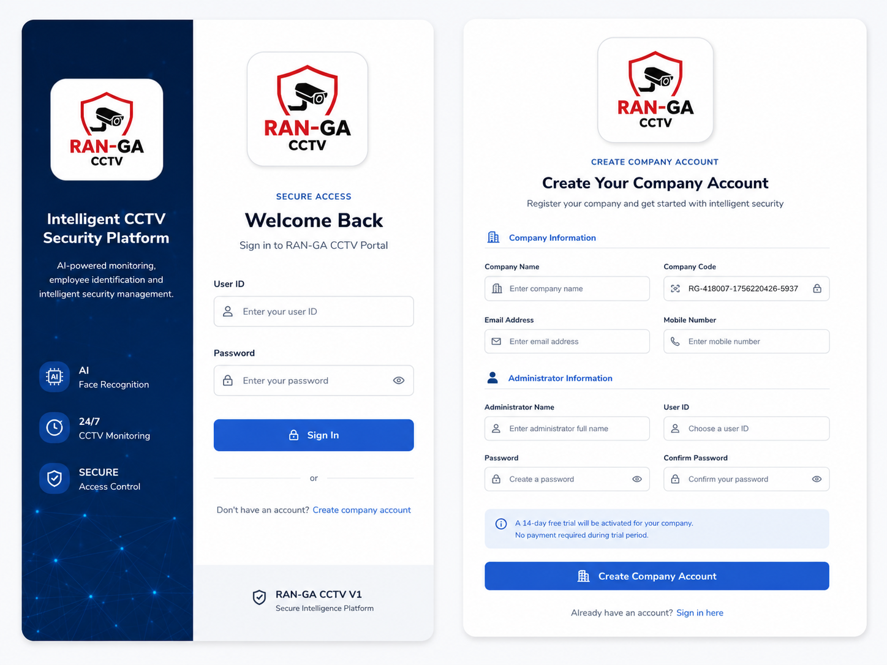
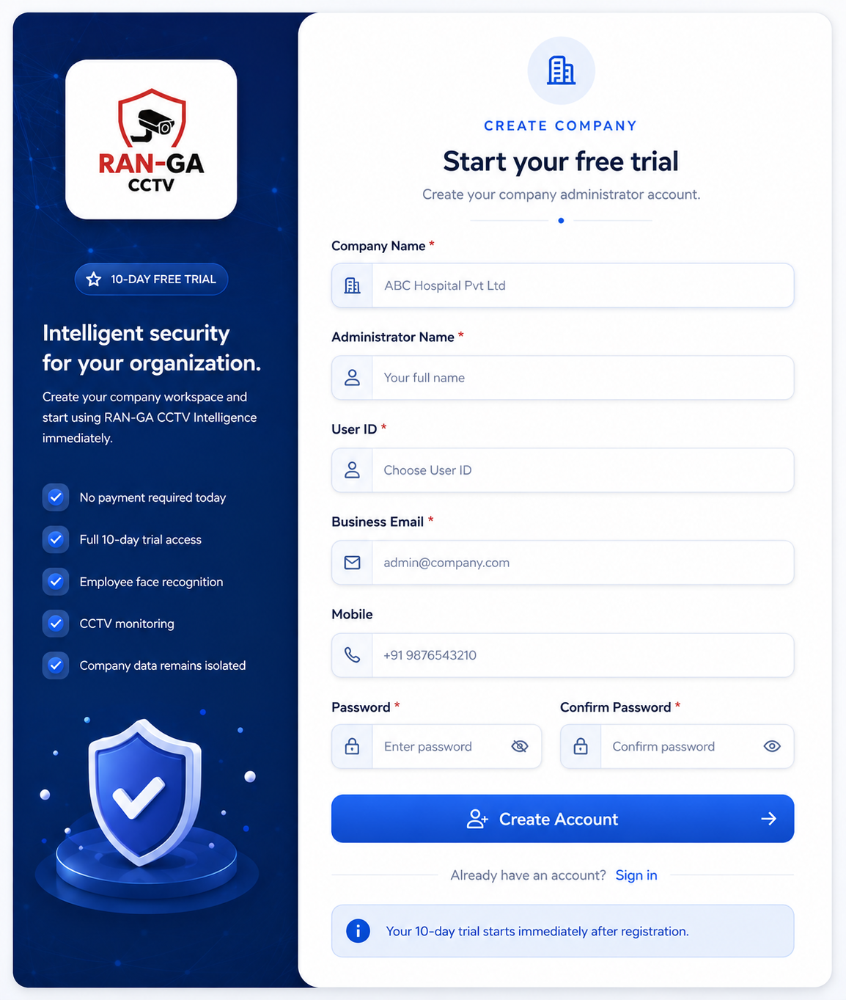

● LIVE ALERTFIRE DETECTED01
FIRE DETECTION
See the danger before it spreads.
Detect visible fire in monitored zones and raise an immediate visual alert so teams can react faster.
Faster awareness · Faster response
 SOFTWARE SOLUTIONSLet's Talk →
SOFTWARE SOLUTIONSLet's Talk →Transform ordinary CCTV into an active intelligence layer for your organization. RAN-GA watches, recognizes, records, alerts and reports — turning every connected camera into a 24/7 digital security and operations assistant.
Turn existing cameras into digital eyes that detect risk, movement and unusual activity in real time. Every event becomes an alert, a record and an opportunity to act faster.

● LIVE ALERTFIRE DETECTEDDetect visible fire in monitored zones and raise an immediate visual alert so teams can react faster.
Faster awareness · Faster response
RESTRICTED ZONESMOKING SUSPECTEDIdentify suspected smoking activity in configured areas such as hospitals, offices, factories and public spaces.
Compliance · Safety · Evidence
DENSITY HIGHCOUNT: 86Measure people count and crowd density to highlight congestion, overcrowding and unusual build-up.
Occupancy · Flow · Density
BEHAVIOUR ALERTGROUP ANOMALYFlag sudden gathering, aggressive group motion or unusual congregation patterns for rapid security review.
Early warning · Incident review
ASSET ALERTOBJECT REMOVEDMonitor protected objects and defined zones, then flag suspected removal, displacement or theft-related activity.
Asset protection · Instant evidence
↑ ENTRY↓ EXITIN 142 · OUT 119Track people through configured entry and exit points for attendance, occupancy and access-flow intelligence.
People count · Occupancy · Attendance
GATE ANALYTICSVEHICLES TODAY: 327Count vehicles and monitor gate entry/exit movement across parking areas, campuses, factories and facility access roads.
Gate flow · Vehicle count · Traffic insightBuilt for organizations that need more than passive video. The platform continuously connects cameras, people, events and reports so security and operations teams can act with better context.
Connect and supervise RTSP/IP camera feeds with centralized camera visibility and operational status.
Enroll employee face profiles and automatically identify recognized employees from configured camera streams.
Assign cameras as ENTRY or EXIT points. First valid entry becomes check-in and the latest valid exit becomes check-out.
Capture valid unknown faces for later security review while separating recognized employee activity from unknown-person events.
Track camera processing state, worker ownership, heartbeats, reconnect status and last processed activity.
Review check-in, check-out, camera names and recognition activity through searchable operational reports and PDF-ready output.
Recognition workers continue processing independently of the browser, so intelligence does not depend on keeping a dashboard open.
Camera workloads can be distributed across supervised workers with ownership control and automatic worker restart support.
Designed around company-level tenancy so employees, cameras, attendance and reports remain separated between organizations.
Extend existing CCTV infrastructure with configurable AI-assisted monitoring for hospitals, clinics and care facilities. These modules are designed to help security and operations teams identify unusual activity, improve patient flow and strengthen day-to-day process visibility.
 01 · SAFETY
01 · SAFETY
Identify unusual movement, restricted-area access, aggressive incidents or other configured risk patterns so security teams can review and respond faster.
 02 · TRACKING
02 · TRACKING
Use camera-based identification and movement events to help locate enrolled staff and support faster review of patient movement across monitored zones.
 03 · HYGIENE
03 · HYGIENE
Support configurable monitoring of PPE, hand-hygiene checkpoints and selected protocol zones, helping teams review compliance exceptions more efficiently.
 04 · FLOW
04 · FLOW
Observe waiting-area occupancy, movement and congestion patterns to help teams identify bottlenecks and improve the flow between reception, consultation and service areas.
 05 · PRIVACY
05 · PRIVACY
Combine controlled access, company-level data separation and event logging with configurable privacy workflows for sensitive healthcare environments.
 06 · OPERATIONS
06 · OPERATIONS
Monitor configured operational zones, staff presence and repeatable camera events to support routine checks, escalation workflows and management visibility.
 07 · CROWD
07 · CROWD
Track crowd density, people counts and movement across entrances, waiting halls and public zones to highlight congestion or unusual occupancy conditions before they become operational problems.
Healthcare analytics can be enabled according to each site, camera position and workflow. Final detection performance depends on camera quality, angle, lighting and the specific AI modules configured for deployment.
The platform supports an edge-first deployment model: camera workers can stay inside the customer network near private CCTV streams, while the central application handles users, companies, employees, reports and system control. This keeps continuous video traffic local and supports secure centralized management.
A clean, organization-focused interface guides companies from secure sign-in and account creation into the CCTV intelligence platform.


See how RAN-GA can fit your existing camera environment and security workflow.